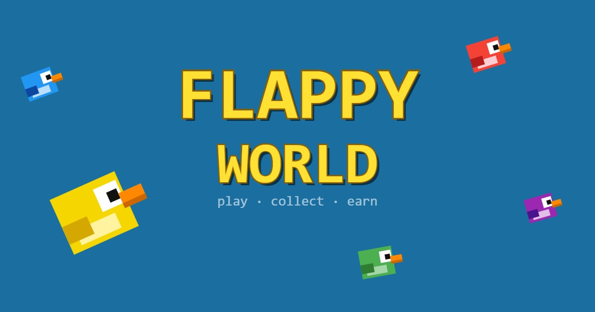

White Paper v0.20 — Mini-Jeu Web3
Flappy World est un mini-jeu Web3 dans le navigateur. L'objectif est de démontrer qu'un jeu blockchain peut être simple, fun et immédiatement jouable, avant d'y intégrer des mécaniques on-chain.
Le projet explore l'intersection entre le jeu vidéo casual et la blockchain Solana, en construisant d'abord un gameplay solide, puis en y greffant une économie tokenisée.
Le code source du jeu est open source. Seule l'architecture Web3 (gestion du token, distribution des récompenses) restera privée pour des raisons de sécurité.
Flappy World est un jeu de type Flappy Bird revisité. Le joueur contrôle un oiseau pixel qui doit traverser des tuyaux en collectant des pièces. Un seul bouton suffit : clic, espace ou toucher.
Un tap/clic fait battre les ailes. Maintenir prolonge légèrement le vol (physique "float"). Lâcher déclenche la chute.
Chaque pièce collectée entre deux tuyaux vaut 1 point. Le top 10 des scores est conservé en session.
Free Run : jeu libre sans limite. Adventure : mode à venir avec conditions et récompenses.
Tous les 3 sauts, un trick s'active (Looping, Toupie). La Toupie offre un effet planeur en maintien — une mécanique de survie.
Cycle de jeu : Intro cinématique → Compte à rebours → Partie → Game Over → Rejouer ou quitter
Flappy World repose sur un système à deux devises :
Gagnées en jeu. Utilisées pour acheter des cosmétiques dans la boutique. Échangeables contre des $token (à venir).
Devise blockchain sur Solana. Obtenue via l'échange de pièces ou les récompenses de mission. Fonctionnalité en cours de développement.
Les pièces n'ont aucune valeur financière. Seul le $token est une devise on-chain. Le ratio d'échange pièces → $token sera défini lors de l'intégration Web3.
La boutique propose des cosmétiques qui modifient l'apparence et les effets visuels sans impacter l'équilibre du jeu. Chaque article peut être prévisualisé avant achat.
Vert · Rouge · Rose · Bleu · Violet · Orange · Multicolor (cycle chromatique fluide) · Phosphor (animation lumineuse). Prix : 10–80 pièces.
Arc-en-ciel · Nuage · Miasma (bulles vertes toxiques). Effets particules laissés dans le sillage de l'oiseau. Prix : 30–400 pièces.
Anneau · Fart (nuage vert) · Firework (explosion colorée). Animations jouées à chaque battement d'ailes. Prix : 30–80 pièces.
Pirouette (looping complet toutes les 3 impulsions) · Toupie (flip vertical + mode planeur au maintien). Prix : 60–100 pièces.
L'écosystème blockchain choisi est Solana, pour ses frais bas et sa rapidité. Le token est déployé via Pump.fun.
Token Solana natif du projet Block'n Dice. Flappy World en est le premier vecteur de distribution. Obtenable en jeu sans spéculation.
Fenêtre de swap intégrée (v0.19.6) permettant d'échanger des pièces contre des $token. Connexion wallet à implémenter.
Limite de runs journalière (3 runs / reboot à 7h). Potentiel de gain plafonné à 1 000 pièces/jour. Incentive à jouer régulièrement.
À venir : pseudo et équipements visibles des autres joueurs dans l'animation d'intro (le groupe d'oiseaux sera composé des profils réels).
Récompense aléatoire parmi une sélection d'objets cosmétiques ou de $token lors d'événements spéciaux.
Récompense déclenchée à l'atteinte d'un score précis ou d'un record personnel. Encourage la progression.
Défis quotidiens ou hebdomadaires (ex : collecter 50 pièces, enchaîner 10 tuyaux). Reward en $token ou article boutique.
Snapshot des scores sur une période. Les meilleurs joueurs reçoivent une part du pool de récompenses en $token.
Prototype jouable · Physique oiseau · Système de pièces · Top 10 scores · Boutique cosmétiques · Sound design · PWA mobile
Tests joueurs · Équilibrage physique · Fenêtre swap $token · Documentation technique · Correction bugs
Déploiement Itch.io · Profil joueur · Mode Adventure · Niveaux thématiques (plage, montagne, automne)
Connexion wallet Solana · Distribution $token · Missions on-chain · Leaderboard global · Boutique thématique par page
Flappy World est développé en HTML5 / JavaScript pur, sans framework, rendu sur un canvas 400×600px.
Boucle à pas fixe 60Hz (accumulateur STEP = 16.67ms). Physique constante quelle que soit la fréquence d'écran. Rendu natif requestAnimationFrame.
Pixel art procédural dessiné en Canvas 2D. Sprites codés en JavaScript pur (rectangles, arcs). Prêt pour remplacement par drawImage().
PWA compatible mobile et desktop. Viewport adaptatif. Immersion plein écran. Support tactile natif.
Projet de taille humaine, en développement actif.
Flappy World est actuellement en phase Alpha (v0.20). Le gameplay de base est fonctionnel et jouable. L'intégration Web3 viendra en phase 4, une fois le jeu stabilisé et testé par une communauté de joueurs. Ce document évoluera avec le projet.